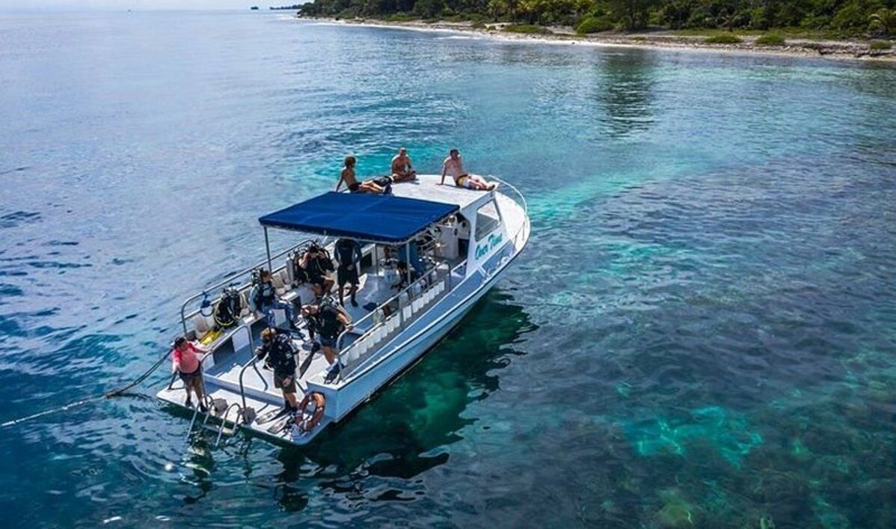
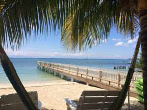
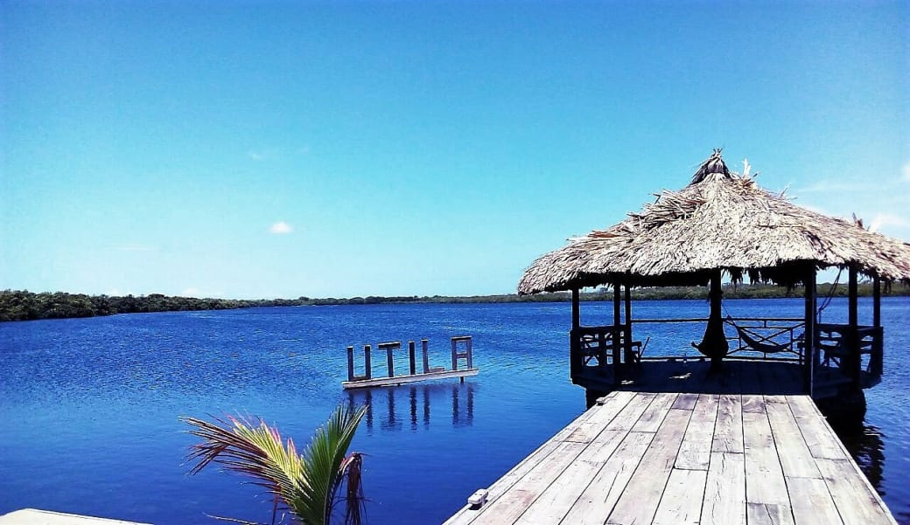

Utila (Islas de la Bahía)

Utila es una pequeña isla ubicada en la costa caribeña de Honduras, conocida por sus aguas cristalinas, arrecifes de coral y vida marina colorida. La isla es un destino turístico popular, especialmente para el buceo y el snorkel, ya que sus aguas cristalinas ofrecen oportunidades para ver una gran cantidad de especies marinas, como tiburones, delfines y tortugas.
Además de sus atractivos naturales, Utila también cuenta con una animada escena social. La isla tiene una gran cantidad de bares, restaurantes y clubes nocturnos para todos los gustos. Los visitantes pueden disfrutar de una amplia variedad de platos locales y internacionales, así como de la música y la vida nocturna de la isla.

La isla cuenta con una gran cantidad de alojamientos para los turistas, desde pequeñas casas de huéspedes hasta lujosos resorts. Los visitantes también pueden participar en una variedad de actividades, como paseos en kayak, paseos en bote, pesca y avistamiento de ballenas.
Utila es un destino turístico asequible y accesible, con una gran cantidad de opciones de transporte para llegar a la isla. Los visitantes pueden tomar un ferry desde la ciudad de La Ceiba o volar directamente al aeropuerto de Utila desde San Pedro Sula.
Además de su belleza natural y su vida nocturna, Utila es conocida por su comunidad de buceo. La isla es hogar de una gran cantidad de escuelas de buceo y de una variedad de sitios de buceo para todos los niveles de experiencia.
Utila es un destino turístico impresionante con una gran cantidad de belleza natural, vida nocturna y una vibrante comunidad de buceo. Es un lugar que vale la pena visitar para cualquier persona interesada en la aventura, el buceo y la relajación en un entorno tropical.
